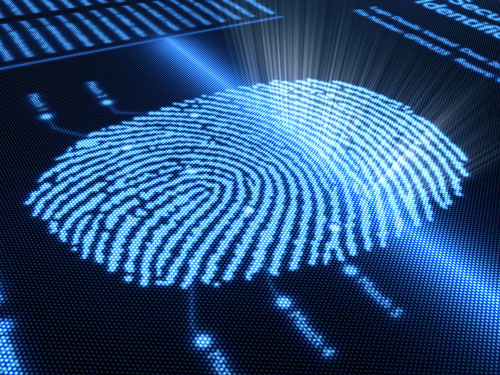

Biometrie betekent het meten en opvatten van eigenschappen van levende wezens, zoals raciale kenmerken, fingerprint- en oogscanner. Je kunt dit zien als een soort “zintuig” van een computer. Sinds het eind van de 20e eeuw duidt het op een manier van identificeren gebaseerd op unieke lichaamskenmerken van mensen. Het is eigenlijk een vervolg van de dactyloscopie, het bestuderen en analyseren van vingerafdrukken, hetzelfde als vingerafdrukken worden DNA sporen ook gebruikt voor misdaadbestrijding. Biometrie wordt veel gebruikt in misdaadbestrijding maar het is ook super geschikt voor bijvoorbeeld een beveiligingsmethode. Er zijn heel veel manieren om het toe te passen. Biometrie kan uiteindelijk heel veel dingen gaan vervangen zoals bijvoorbeeld: codes, wachtwoorde, sleutels en foto’s, maar het zou niet alleen dit vervangen maar ook veel sterker maken, waardoor het nog moeilijker wordt voor criminelen om iets te stelen.
Het uiteindelijke doel van biometrie is dat de persoon niet te scheiden is van zijn lichaam, hiermee bedoelen ze als je een fingerprint scant dan weet je altijd dat maar 1 persoon dat kan zijn omdat alleen hij die specifieke fingerprint heeft. Dit heeft een sterke voordeel tegenover pasjes en wachtwoorden omdat die altijd gestolen kunnen worden. DNA kan niet gestolen worden met de technologie dat wij nu hebben. Dus je zult er altijd van zeker zijn dat het de persoon is die bedoelt is om toegang te krijgen. Het zou werkelijk onmogelijk zijn om lichaamskenmerken overdraagbaar te maken, dat je wel bijvoorbeeld met een wachtwoord makkelijk kan doen.
De ontwikkelijken op het gebied van biometrie gaat erg snel, vooral dingen zoals gezichtsherkenning gaat met gigantische sprongen vooruit, dit zijn niet alleen basiskenmerken maar ook betrouwbaarheid. De betrouwbaarheid van gezichtsherkenning en irisherkenning zijn nu al te vergelijken met vingerafdrukken. Dit komt niet alleen door verbetering van herkenningsoftware maar ook door betere resolutie van cameras, de vooruitgang van cameras beinvloedt de vooruitgang van gezichtsherkenning sterk. Een goede techniek dat je zou kunnen gebruiken en dat ook beschikbaar is, is de handmeting, de enige nadeel hiervan is dat deze niet 100% betrouwbaar is. In tegenstelling tot handmeting is de irisherkenning wel 100% betrouwbaar. Andere herkenningsmethodes zijn spraakherkenning en oorafdrukherkenning. Oorafdrukherkenning is nog niet helemaal in ontwikkelijk maar er wordt serieus over nagedacht. De voordelen van spraakherkenning is dat dit heel makkelijk en snel te gebruiken is in bepaalde situaties, zoals het starten van autos en andere elektronische aparatuur of de verwarming uit/aan zetten als je net van een lange dag werk thuis komt.